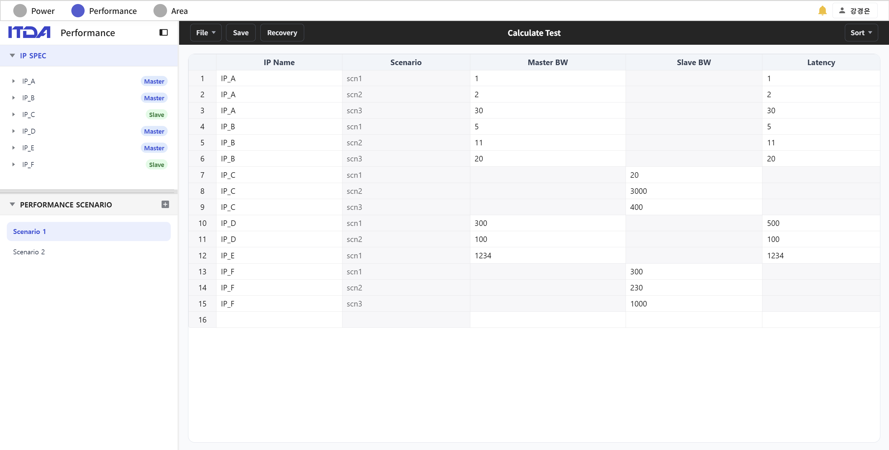
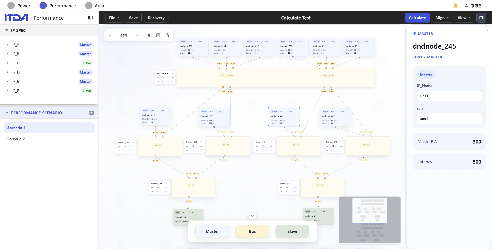
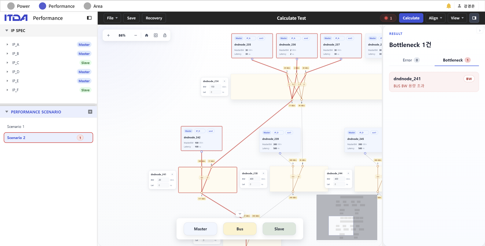

SoC PPA Analyzer
SoC 설계 초기 단계에서 PPA를 시각적으로 예측하고 설계 영향을 비교 분석하는 실시간 협업 플랫폼
0. 프로젝트 소개
1. 프로젝트 개요
- SoC 초기 설계 단계에서 Power, Performance, Area를 한 화면에서 비교하기 위한 웹 프로젝트
- RTL 작성 전에도 IP 스펙과 연결 관계를 입력해 대략적인 PPA 흐름을 확인할 수 있도록 설계
- Power, Performance, Area 화면을 Vue 3 SPA로 구성하고 FastAPI와 MongoDB로 데이터 관리
- 여러 설계자가 같은 프로젝트를 보며 의견을 남길 수 있도록 저장, 백업, 코멘트 기능 구성



주요 기능
- Power: IP/PD 스펙 입력, Dynamic / Leakage 계산, 시간대별 전력 확인
- Performance: IP / Bus 다이어그램 작성, BW / Latency 검증, master→slave 경로 병목 확인
- Area: Soft IP / Hard IP / SRAM 정보 입력, Gate Count 기반 면적 계산, 칩 배치 확인
- 공통: 실시간 협업, 프로젝트 저장, 자동 백업, 코멘트 기반 협업
2. 담당 역할
- Performance 분석 API와 병목 계산 로직 담당
- 토폴로지 / 시나리오 캐시, 검증 규칙, REST API 구조 설계
- Vue Flow 그래프를 백엔드 입력 형태로 바꾸는 프론트엔드 저장 로직 구현
- Jenkins, Docker, EC2, Nginx 기반 배포 파이프라인 구성
- GitLab Webhook, FE/BE 병렬 빌드와 테스트, 헬스체크 배포 흐름 연결
팀 내 역할 분담(총 5인)
- Power: 1명
- Performance: 2명
- Area: 2명
3. 사용 기술
FastAPI + asyncio
- 분석 API와 WebSocket을 한 백엔드에서 처리하기 위해 사용
- Pydantic 스키마를 기준으로 FE와 BE가 같은 데이터 형태를 공유하도록 구성
Rete-like Incremental Engine
- 시나리오 비교 시 전체 그래프를 매번 다시 계산하지 않도록 캐시 구조 설계에 참고
- 그래프 구조가 바뀐 경우와 수치만 바뀐 경우를 분리해 처리
Jenkins + Docker + EC2
- 푸시 후 빌드, 테스트, 배포까지 자동으로 이어지도록 EC2에 직접 구성
- Nginx에서 Vue 정적 파일과 FastAPI API 요청을 나누어 라우팅
Pinia (Vue 3)
- Vue Flow에서 만든 노드와 엣지를 분석 엔진이 받을 수 있는 형태로 정리하기 위해 사용
- 그래프 상태, 연결 정보, 시나리오별 수정값을 한 곳에서 관리
4. 구현 사항

Performance 분석 엔진 (BE)
- 토폴로지 fingerprint를 만들어 같은 구조의 그래프 분석 결과 재사용
- 시나리오 ID별 결과를 따로 저장해 수치 비교 요청 처리 속도 개선
- 변경된 노드 / 엣지 힌트가 있으면 영향받은 규칙만 다시 계산하도록 구현
- 검증 규칙과 병목 분석 규칙을 분리해 추가와 수정이 쉬운 구조로 구성
- 응답에 computedMode 값을 포함해 전체 계산인지 캐시 사용인지 확인 가능하도록 구성
Performance 그래프 저장 로직 (FE)
- `serializeGraphForBackend`로 Vue Flow 데이터를 백엔드 입력 형태로 변환
- `graphConnections`로 master→slave 경로를 빠르게 조회할 수 있는 구조 구현
- 버스 연결과 BW 누적 검증을 저장 전에 확인
- 기본 스펙에 시나리오별 수정값을 합쳐 snapshot을 만드는 흐름 구현
Jenkins CI/CD 파이프라인
- GitLab Webhook으로 푸시 시 Jenkins가 자동 실행되도록 연결
- FE 빌드와 BE 테스트(pytest + flake8)를 병렬 단계로 동시에 실행
- npm / pip 캐시를 워크스페이스 밖에 두어 같은 의존성 재다운로드 방지
- 새 빌드가 들어오면 이전 빌드를 중단해 대기열 누적 방지
- pytest 리포트와 timeout 설정을 추가해 실패 원인 확인 흐름 개선
EC2 무중단 배포 구조
- 새 BE 이미지를 바로 교체하지 않고 임시 컨테이너에서 먼저 `/health` 확인
- 검증이 통과한 경우에만 실제 서비스 포트를 교체하고, 실패 시 기존 컨테이너 유지
- BE 이미지는 최신 3개 태그만 남기고 나머지는 자동 정리
- Nginx에서 Vue 정적 파일 서빙, FastAPI 프록시, CORS 헤더 설정 관리
5. 문제 해결 사례
1) Performance 시나리오 비교가 느려지던 문제
상황
같은 다이어그램에서 수치만 바꿔 여러 시나리오를 비교하는 기능이 있었다. 처음에는 요청마다 그래프 탐색과 검증을 모두 다시 수행해서, 시나리오가 늘수록 응답이 느려졌다.
해결
- 그래프 구조와 시나리오 수치를 분리해서 보도록 요청 구조 분리
- 구조가 같으면 fingerprint를 기준으로 BFS와 flow 탐색 결과 재사용
- 시나리오 ID별 캐시를 두어 직전 분석 결과 활용
- FE가 보내는 changedNodeIds / changedEdgeIds 힌트로 영향받은 규칙만 다시 계산하도록 구현
성과
- 같은 다이어그램의 시나리오 비교에서 반복 그래프 탐색 감소
- 응답에 computedMode 값을 포함해 어떤 계산 경로를 탔는지 확인 가능
- 시나리오가 늘어나도 응답 시간이 곧바로 비례해 늘지 않는 구조 구성
의미
- 도메인에서 자주 반복되는 패턴을 먼저 찾고, 그 기준으로 캐시 키를 잡는 방식 정리
- Rete 알고리즘에서 중간 결과를 나누어 보관하는 아이디어를 실제 성능 문제에 적용
2) Jenkins 빌드 시간과 배포 안정성 개선
상황
초기 파이프라인은 매 빌드마다 npm install과 pip install을 다시 수행해 시간이 오래 걸렸다. 또 BE 컨테이너를 바로 교체하는 방식이라, 잘못된 이미지가 올라가면 서비스가 끊길 위험이 있었다.
해결
- npm / pip 캐시를 워크스페이스 밖에 저장해 다음 빌드에서도 재사용
- venv 캐시 키를 브랜치, pyproject 해시, 인터프리터 해시 기준으로 분리
- FE 빌드와 BE 테스트를 병렬 단계로 동시에 실행
- 새 BE 이미지는 임시 컨테이너에서 `/health`를 통과한 뒤에만 실제 포트로 교체
- disableConcurrentBuilds(abortPrevious: true)로 중복 빌드 누적 방지
성과
- 의존성이 바뀌지 않은 빌드에서 install 단계 시간 단축
- 불량 이미지가 빌드되어도 기존 컨테이너가 계속 서비스되는 구조 구성
- 이미지와 캐시를 주기적으로 정리해 디스크 사용량 누적 방지
의미
- CI에서는 코드 수정만큼 캐시 설계가 빌드 시간에 큰 영향을 준다는 점 확인
- 빌드, 검증, 교체 단계를 분리하며 단순 재시작보다 안정적인 배포 흐름 구성
3) 다중 노드 작업 시 WebSocket 메시지 폭주 문제
상황
Performance 다이어그램에서 노드 복사, 다중 선택, 일괄 삭제처럼 한 번의 사용자 동작이 여러 노드에 적용되는 경우가 있었다. 처음에는 노드마다 잠금 요청과 변경 broadcast가 따로 발생해, 50개 이상 노드를 한 번에 복사하면 짧은 시간에 수십~수백 개의 WebSocket 메시지와 HTTP 요청이 쌓였다.
해결
- 사용자 한 동작을 그래프 트랜잭션 1건으로 보고 store에서 변경 사항 누적
- 트랜잭션 종료 시 누적된 변경을 단일 WebSocket 메시지로 묶어 batch 전송
- 잠금 요청 / 해제를 노드별 호출에서 다중 선택 단위의 bulk granted / released 응답으로 전환
- 백엔드 노드 ID 예약 API를 1회 호출로 최대 1,024개까지 예약 가능하도록 설계
- 50개 이상 노드 복사 시에도 노드 수만큼 ID 예약 API를 반복 호출하지 않도록 처리
성과
- 다중 노드 작업에서 발생하던 WebSocket 메시지와 HTTP 요청 수를 작업 1건 단위로 축소
- 협업 peer의 broadcast 처리와 렌더 비용이 트랜잭션 크기에 따라 급증하지 않도록 개선
- 잠금 요청 / 해제 round-trip 감소로 다중 선택 작업 응답성 개선
의미
- 실시간 협업에서는 사용자 1동작을 메시지 1건으로 묶는 트랜잭션 단위가 중요하다는 점 확인
- FE 트랜잭션 경계, BE bulk API, ID 예약 API가 같은 방향으로 설계되어야 효과가 커진다는 점 정리
6. 성과 및 결과
- Performance 파트의 분석 API, 검증 규칙, 병목 계산 로직 구현
- 토폴로지와 시나리오 캐시를 분리해 시나리오 비교 요청의 반복 계산 감소
- Vue Flow 그래프 데이터를 백엔드 스키마에 맞춰 보내는 변환 흐름 구현
- Jenkins, Docker, EC2를 직접 구성해 푸시부터 헬스체크 배포까지 이어지는 파이프라인 구성
- 의존성 캐시와 abortPrevious 설정을 적용해 재빌드 시간과 빌드 대기열 문제 완화